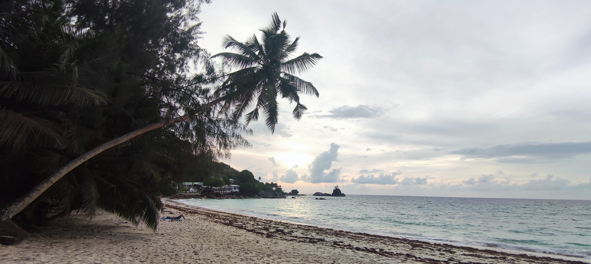
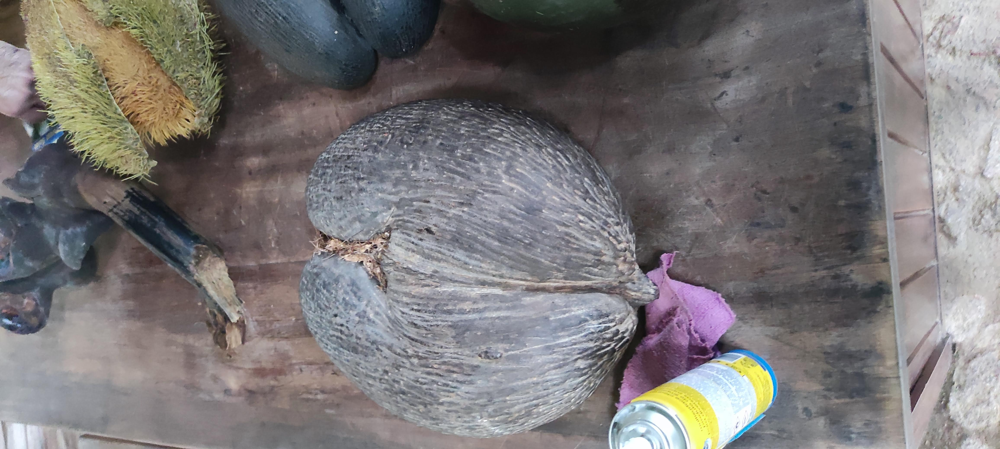
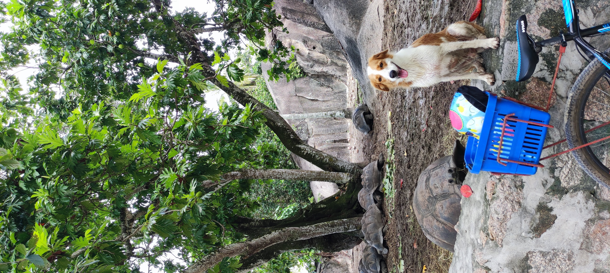
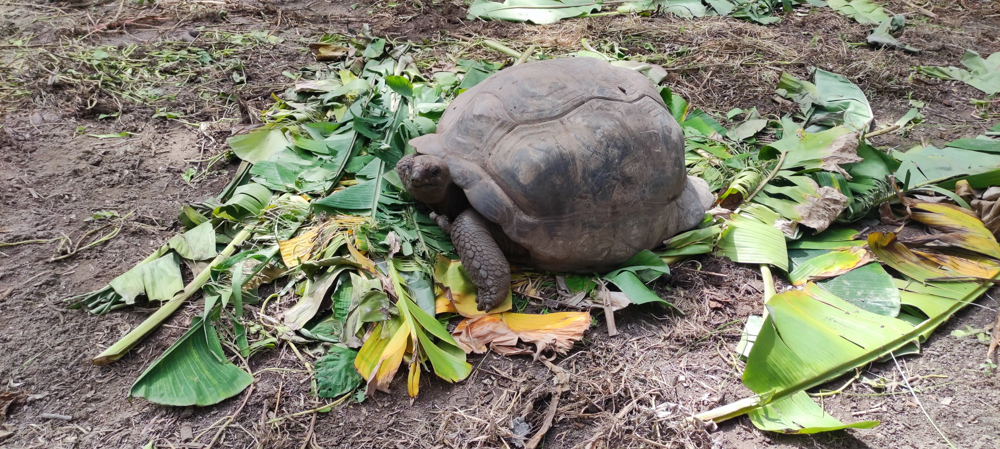
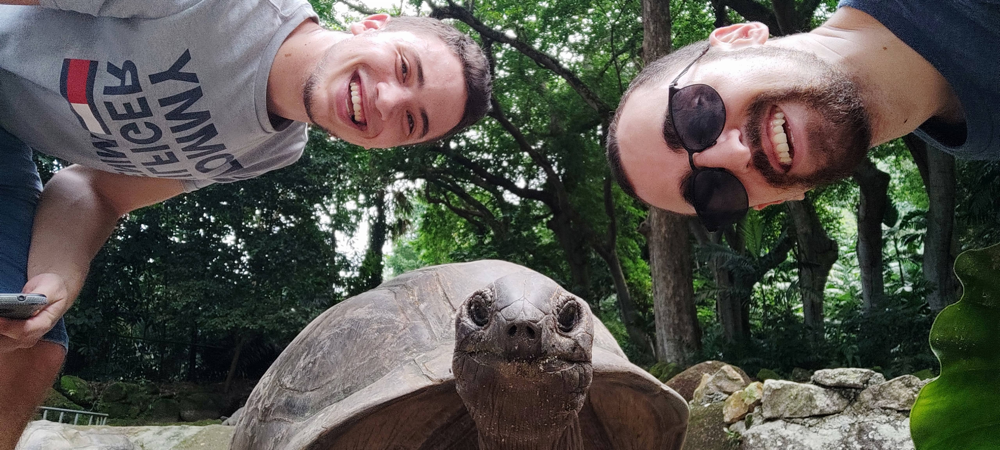
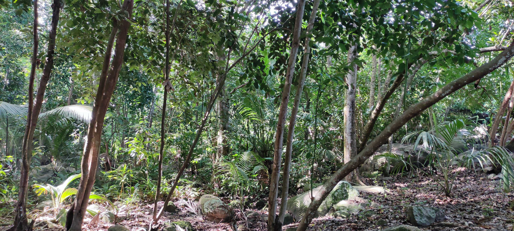

Athens:
When I was a young boy (no, really), I read Percy Jackson. That's the main reason why I'm still a nerd. But, it made me love greek mythology and ever since I've wanted to visit Athens. Now, after COVID was over, my family and I went there to spend our passover holiday. It was absolutely wonderful. The Acropolis is an amazing piece of history and the view from the top on all over the city is awesome. Unfortunately, It was my grandparents last trip as they can't walk anymore but it was still a great trip
Picturesque Moments






Favourite Places:
-
Victoria
Victoria is the capital of the Seychelles archipalego. It is a great place of culture, amazing market, good food. In the middle of the city there's the botanical gardens which is a great place with a river and gives great jungle vibes.
-
Eden Island
Apperently, There is an artificial island built next to Victoria that has a ships dock and probably the best indian restaurant in the world!
-
Praslin & Vallee de Mai
We took a ferry to Praslin Island. Visited the UNESCO World Heritage Site, Vallee de Mai, home to the unique Coco de Mer palm. It's a coconut shaped like human reproductive organs! Afternoon spent at Anse Lazio, one of the world's most beautiful beaches. We drank from a coconut, sat on a rock and it was perfect.
-
La Digue
Day trip to La Digue by ferry. We rented bicycles to explore the island, visiting the famous Anse Source d'Argent with its granite boulders, and Grande Anse. Enjoyed fresh fruit juices by the beach. We met a cute dog and had a great milkshake in Bikini-Bottom!
-
Beau Vallon
Beau Vallon is a bay in the north- west side of Mahe and it is known for its great marine sports activities. We dived, jet-skied and chilled out on the amazing beach.
-
Hiking
There are some great hiking trails in the mountains of Mahe. We went on three trails in one day! From above, you can see the whole island but on one of the peaks it's started raining and a great fog obscured the view so we ran back down soaking wet. It was still fun though.
Travel Tips for Seychelles
- Island Hopping: First of all, don't sleep in one island. also, take excursions to small islands, explore their trails and meet some cute tortoises!
- Sun Protection: No matter when you come to The Seychelles, it will be hot. Bring sun cream, a hat and stay in the shade. Though you can get great tan during this trip.
- Local Currency: Seychellois Rupees(SCR) is great. It's lower than the ILS so it's cheap. Also, they have turtles on their bills.
- Respect Nature: Avoid touching coral, don't litter, and respect wildlife. Also, while tempting, don't feed the giant tortoise. They're cute but they can snap you finger!
- Creole Cuisine: Man, do I love Creole food and I didn't even knew what is was! It's like a mix of French and Indiand cuisine. A lot of seafood with a lot of curry. Absolutely the best!